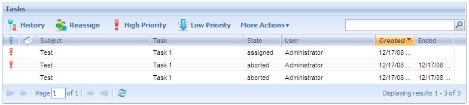
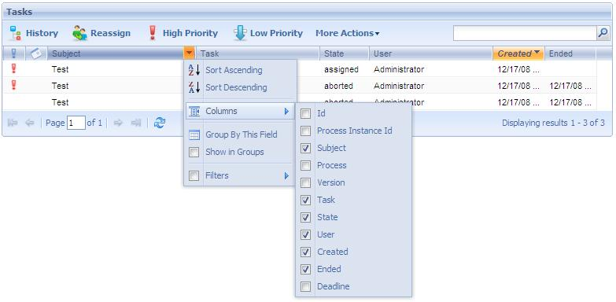

Through this application, the process administrator user can monitor the tasks of the different processes existing in the workflow system.
The following figure shows the Tasks application interface:

- History
It allows to view the process history.
- Reassign
It allows to reassign a workitem.
- High Priority
It allows to set high priority to the process.
- Low Priority
It allows to set a low priority to the process.
- Skip
It allows to complete a workitem without executing it.
- Undo
It allows to undo a task.
- Comments
It allows to access the process comments.
- Documents
It allows to access the process documents.

Priority: It allows to change the priority.
Warning
- Sort Ascending
It allows to sort the process instances by the name of the column selected. From A to Z.
- Sort Descending
It allows to sort the process instances by the name of the column selected. From Z to A.
- Columns
It allows to select the columns wanted to be visible.
- Id
Process Id
- Process Instance Id
Process Instance Id
- Subject
Process Instance subject
- Process
Process Definition name
- Version
Process Definition version
- Task
Task Name
- State
Process Instance State
- User
Task assigned user
- Created
Process Instance date create
- Ended
Process Instance date ended
- Deadline
It allows filtering by those tasks whose deadline will be reached soon.
- Group by this field
It allows to group the process instances by the column selected
- Show in groups
It allows to group the process instance by the column selected.
- Filters
It allows to filter the process instances.
Notice: Organizational units are not filtered due to performance issues.
|